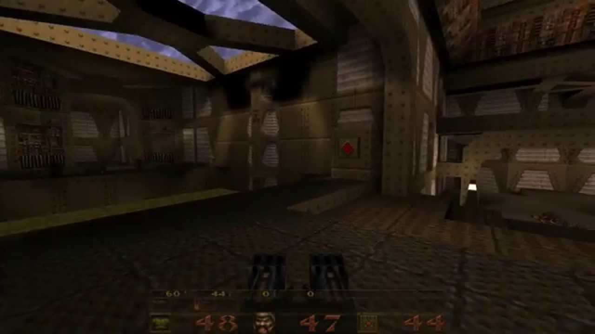
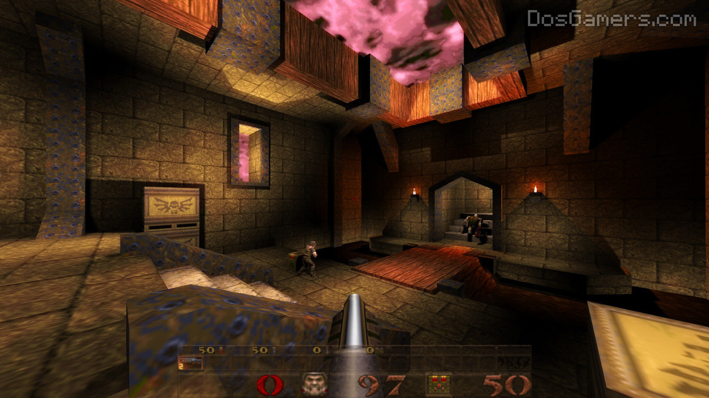

This game is one of the first to use real 3D rendering software. It was created by IT software and was basicly a 3D DOOM clone.

Although Quake was a huge improvement in the FPS genre, it's use of 3D did have it's disadvantages. The proccess of 3D rendering didn't leave much proccessing power for other features. As a result, enemy counts are generally low and maps are small.

Facts
The main story was originally going to be different, but because of time constraints they had to make the story a clone of DOOM's
Explosions hardly do any damage, but have a lot of force to them. This allows the player to jump with the rocket launcher
The games episode select screen is actually it's own playable map.
Muzzle flashes on the weapons are stored in a unveiwable part of the weapon when not in use. The flashes are moved on the weapon models as needed.